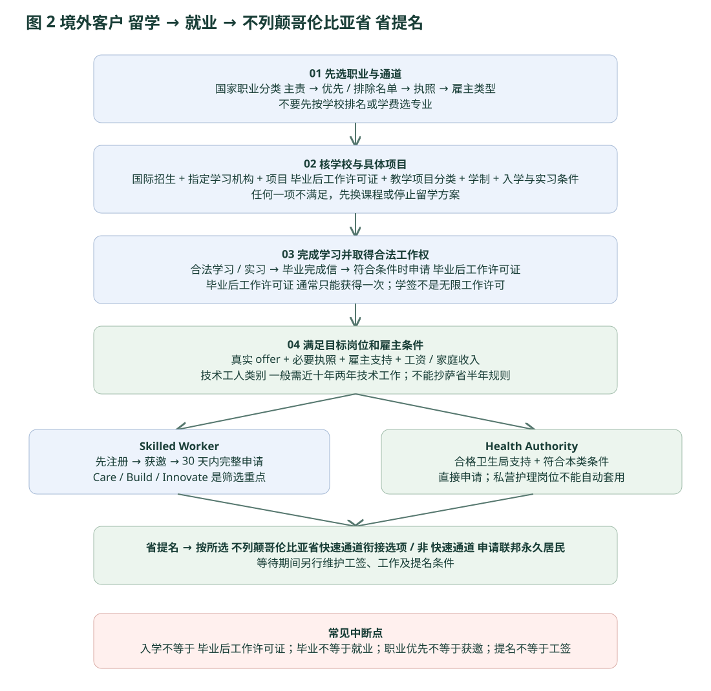

四 境外客户留学规划
先定职业，再定学校和专业；先验证每道闸，再收取或支付下一阶段费用。
本章沿用参考报告“先职业、后课程”的研究顺序。不列颠哥伦比亚省（British Columbia，BC） 没有通用的“读书毕业后工作半年即省提名”规则；旧学生类别或拟议新类别不能作为今天的招生承诺。学生类别与当前方向

{kind=link}
4.1 留学路径的四道闸
| 闸门 | 必须核对 | 留下什么证据 | 什么时候停止 |
|---|---|---|---|
| 职业与政策 | 先以实际职责核 国家职业分类（National Occupational Classification，NOC），再查 Care / Build、排除清单及执照；优先清单不是独立签证。 | 保存职业主责、雇主职位说明、该轮选择规则及 不列颠哥伦比亚省（British Columbia，BC） 监管机构要求。 | 目标职位在排除清单，或入职执照无法取得。 |
| 学校与项目 | 国际学生是否能申请；指定学习机构（Designated Learning Institution，DLI） 与具体校区；具体课程是否符合 毕业后工作许可证（Post-Graduation Work Permit，PGWP）；教学项目分类（Classification of Instructional Programs，CIP）、学制、授课方式。 | 招生页、录取信、指定学习机构（Designated Learning Institution，DLI）/项目资格、学校书面 教学项目分类（Classification of Instructional Programs，CIP） 与学制确认。 | 国内生专属班、封闭招生，或资格仅靠营销页面。 |
| 个人与资金 | 入学英语、先修课、学签解释和资金；语言桥梁课程本身不等于移民职业课程。 | 成绩、考试、资金来源、学习计划、完整费用表及实习门槛。 | 只够学费而无生活资金；靠未来超时工作才能支付。 |
| 就业与雇主 | 雇主愿意支持；职位工资和家庭收入；技术工人类别（Skilled Worker，SW） 工作经验；卫生局类别（Health Authority，HA） 必须符合卫生局规则。 | 雇主声明、合同、工资、执照、雇主资格与招聘证明。 | 把毕业证、实习或泛泛“就业支持”当作雇主担保。 |
毕业工签 毕业后工作许可证（Post-Graduation Work Permit，PGWP）：逐项目和逐人检查
| 项目类型 | 毕业申请语言 | 专业领域限制 | 工签长度的基本框架 |
|---|---|---|---|
| 学士、硕士、博士学位 | 英语或法语每项 加拿大语言基准（Canadian Language Benchmarks，CLB） / 加拿大法语语言基准（Niveaux de compétence linguistique canadiens，NCLC） 7 | 学位项目无 毕业后工作许可证（Post-Graduation Work Permit，PGWP） 专业领域要求；仍须满足其他资格。 | 符合条件且至少 8 个月的硕士，可能获 3 年；其他项目按学制判断。 |
| 其他大学项目 | 每项 加拿大语言基准（Canadian Language Benchmarks，CLB） / 加拿大法语语言基准（Niveaux de compétence linguistique canadiens，NCLC） 7 | 2024-11-01 起提交学签申请者通常须满足 加拿大移民、难民及公民部（Immigration, Refugees and Citizenship Canada，IRCC） 合资格 教学项目分类（Classification of Instructional Programs，CIP）；此前申请者按官方例外核验。 | 8 个月至不足 2 年通常不超过项目长度；2 年及以上可能 3 年。 |
| 学院、理工等非大学项目 | 每项 加拿大语言基准（Canadian Language Benchmarks，CLB） / 加拿大法语语言基准（Niveaux de compétence linguistique canadiens，NCLC） 5 | 2024-11-01 起提交学签申请者通常须核合资格 教学项目分类（Classification of Instructional Programs，CIP）；此前申请者按例外核验。学校标签不是全部个人条件。 | 同样核最低学制、全日制与护照期限。32 周不能不经确认直接写成满足 8 个月。 |
- 通常在完成课程后 180 天内申请；还须核该期限内的学习许可有效记录、身份及是否需要恢复身份。
- 通常须各学期全日制（最后学期等官方例外另查），并在合资格 指定学习机构（Designated Learning Institution，DLI） 完成课程；一般只能取得一次 毕业后工作许可证（Post-Graduation Work Permit，PGWP）。
- 2026 年合资格 教学项目分类（Classification of Instructional Programs，CIP） 清单冻结只适用于所公布的 2026 年安排；不能据此保证 2028–2030 年政策。
- 毕业后工作许可证（Post-Graduation Work Permit，PGWP） 申请期间能否工作，要另核提交时的学签、原工作资格和完整申请条件；不是所有毕业生一提交就能工作。
加拿大移民、难民及公民部（Immigration, Refugees and Citizenship Canada，IRCC） 毕业后工作许可证（Post-Graduation Work Permit，PGWP） 资格毕业后工作许可证（Post-Graduation Work Permit，PGWP） 时长教学项目分类（Classification of Instructional Programs，CIP） 与 2026 年安排
成本先算清：低语言门槛不等于低预算
以 Douglas 两年制幼教为算例：每学分 加元（Canadian Dollar，CAD） 682.40；一年按 30 学分，学费约 加元（Canadian Dollar，CAD） 20,472。2026-09-01 起，单人学签生活资金基准 加元（Canadian Dollar，CAD） 23,448，另加学费和交通。两项已经达到 加元（Canadian Dollar，CAD） 43,920 / 年，还未计保险、杂费、签证、机票及安家费用。生活资金基准是签证证明门槛，也不是温哥华实际开销保证。
| 预算项 | 算例 | 处理方式 |
|---|---|---|
| 30 学分学费 | 20,472 | 按所选学期、学分和新年度收费再算。 |
| 单人生活资金基准 | 23,448 | 不含学费与交通；家庭人数增加需重算。 |
| 已知两项合计 | 43,920 | 不是完整总预算，不能当作最终报价。 |
| 人民币预算 80,000 / 年 | 本轮未验证到能满足的 不列颠哥伦比亚省（British Columbia，BC） 留学方案 | 不凭乐观汇率或未来兼职收入把超预算项目写成可行。 |
加拿大移民、难民及公民部（Immigration, Refugees and Citizenship Canada，IRCC） 资金标准Douglas international tuition and fees
医学和法律等专业可能受政策重视，但重新入学、语言、专业认证和注册的成本很高。本报告保留这些职业在政府清单中的位置；学校建议部分会区分“研究选项”与“适合普通背景的可执行产品”。